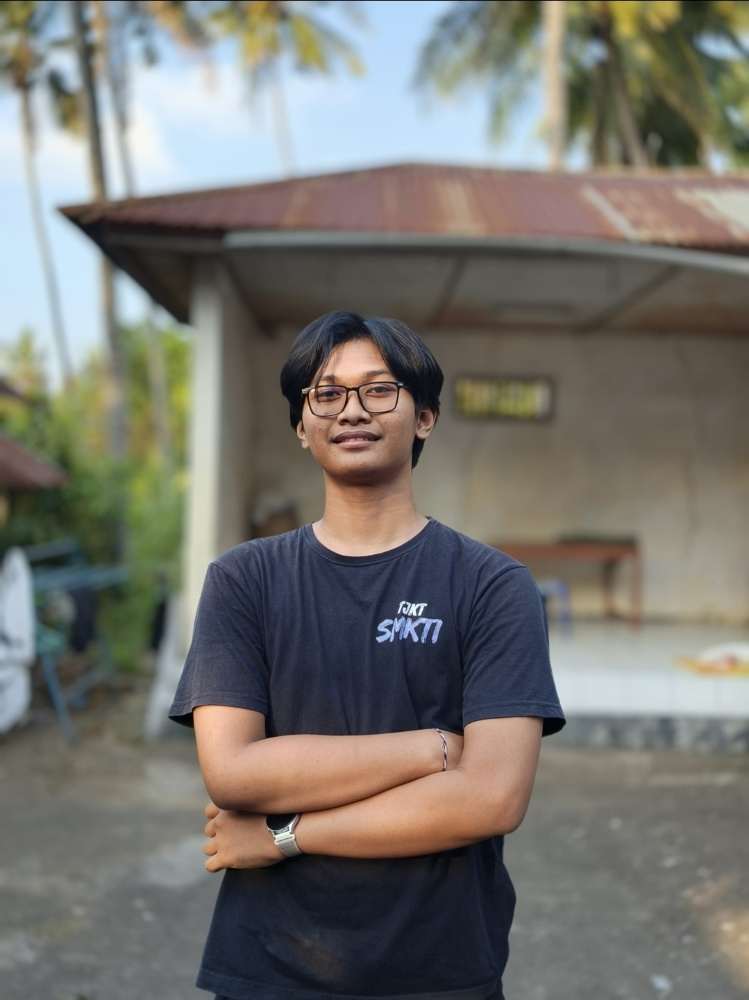

"Exploring Technology, Building Solutions."
Latar belakang jaringan komputer (TJKT) dengan fokus pengembangan di bidang ilmu komputer, perangkat keras, dan pemrograman.

Halo! Saya adalah mahasiswa S1 Ilmu Komputer di Universitas Pendidikan Ganesha (Undiksha), berdomisili di Singaraja, Bali.
Sebelum memasuki dunia perkuliahan, saya menempuh pendidikan di SMK TI Bali Global Singaraja dengan jurusan Teknik Jaringan Komputer dan Telekomunikasi (TJKT). Pengalaman tersebut memberi saya fondasi kuat di bidang infrastruktur jaringan, dan kini saya antusias memperluas keahlian saya ke ranah pengembangan perangkat lunak dan sistem komputer secara keseluruhan.
Fokus pada algoritma, pemrograman, dan pengembangan sistem komputer.
Mempelajari dasar jaringan, instalasi, dan administrasi infrastruktur jaringan.
Berpengalaman sebagai Sales representatif untuk penyedia layanan internet fiber berkecepatan tinggi MyRepublic.
Pengalaman praktik langsung di industri penyedia layanan internet (ISP) dan infrastruktur jaringan pelanggan.
Website portofolio kolaborasi kelompok mahasiswa Ilmu Komputer.
Desain dan simulasi topologi jaringan menggunakan Cisco Packet Tracer.
Implementasi dan konfigurasi perangkat routing MikroTik & Winbox.
Dokumentasi lapangan kegiatan instalasi jaringan dan fiber optik selama PKL.
Kumpulan program dan algoritma mendatang yang akan dikembangkan selama perkuliahan.
Di luar layar monitor dan rentetan kode, saya memiliki passion yang besar di dunia gaming, khususnya dengan genre Story-Driven / Narrative Games.
Saya sangat menikmati game yang memiliki alur cerita mendalam, sinematik yang kuat, dan pengembangan karakter yang emosional seperti franchise The Last of Us, seri Resident Evil, God of War, serta menantikan rilisan seperti Pragmata.
"Bagi saya, video game bukan sekadar hiburan, melainkan mahakarya seni interaktif yang menginspirasi kreativitas dalam membangun sistem."